內容系列
商業分析系列
FB、Dcard 與網站免費文章整理，從公開事件拆解公司策略、臨床數據、交易訊號與資本市場判斷。

減肥成王：GLP-1 正在把全球生技資本重新洗牌
GLP-1 不只是減重藥題材，而是重新配置全球藥廠研發預算、產能投資、BD 談判與生技估值規則的核心變數。

RAS 標靶打開胰臟癌新局：生華科 CX-5461 卡位下一場「抗藥性管理」戰
Daraxonrasib 打開胰臟癌 RAS 標靶時代後，真正的下一場戰爭是抗藥性管理；生華科 CX-5461 的價值在於能否成為 RAS 標靶後時代的免疫增敏與聯合治療候選策略。

生醫公司 IR 不是把簡報變漂亮，而是把管線變成可追蹤的資本市場故事
好的 IR 內容不是宣傳話術，而是把臨床、CMC、監管、商業化與對標公司轉成投資人可以追蹤的節點。

70億美元核藥併購傳聞：Curium想買Lantheus，真正買的是一張核藥時代的入場券
Curium 傳出有意以約 70 億美元收購 Lantheus。這不只是核藥併購傳聞，而是診斷、製造、配送、院端網絡與治療端能力整合的產業訊號。

CAR-T 迎接新時代：從血癌走向自體免疫
Kyverna 啟動 mivocabtagene autoleucel 的 BLA 滾動式提交，象徵 CAR-T 從血癌治療走向自體免疫疾病的新階段，也重新打開細胞治療的商業想像。

沒有 AI 能力的藥廠，將不再被稱作藥廠
AI 正在從工具變成製藥公司的底層能力。未來藥廠不只比管線，也會比資料、模型、實驗自動化與決策速度，沒有 AI 能力的公司將愈來愈難被視為現代藥廠。

老靶點都很捲，但不是不能賺錢
熱門靶點擁擠不代表沒有價值；真正關鍵是公司能否在身位、差異化、適應症切入、技術換代與 BD 對接中找到自己的獲利位置。

從 Ruxolitinib cream 說起：外用 JAK 抑制劑，為什麼不是每個分子都能做？
外用 JAK 抑制劑的核心不是單純抑制 JAK，而是分子能否穿過皮膚、留在局部、降低全身暴露，並在適應症與製劑設計上建立差異化。

Retatrutide 殺進減重手術級別：禮來三重受體藥物，把肥胖治療推向新戰場
Eli Lilly 的 retatrutide 在三期試驗中把減重幅度推向接近手術級別，代表肥胖治療正從單一路徑抑制食慾，走向多受體代謝調控的新戰場。

40年沒藥的遺傳病迎來重磅進展
AATD 治療在近 40 年後迎來新療法競速，Sanofi、Wave、Beam 分別以長效重組蛋白、RNA 編輯與基因鹼基編輯切入，代表罕見遺傳病治療正從補蛋白走向根源修正。

Biogen 孤注一擲：Alzheimer’s Disease 研發墳場裡，tau 靶點能不能走出新路？
Biogen 在 BIIB080 / diranersen 的 Phase 2 CELIA 研究未達主要終點後仍推進 Phase 3，反映 AD 研發裡 tau 靶點的高風險、高需求與策略性押注。

核藥賣爆了
Pluvicto 單季銷售達 6.42 億美元，顯示攝護腺癌治療正從荷爾蒙訊號攻防，走向 PSMA 核醫診療一體化與放射配體療法的新階段。

Tavneos 危機：20 例死亡通報、資料完整性疑雲，Amgen 罕病明星藥站上撤市邊緣
罕病藥物的價值高度依賴可信資料與安全性信任，一旦死亡通報與資料完整性疑雲浮現，估值邏輯就會被迫重估。

藥王的最佳搭檔？療效翻倍！
新藥競爭不只看單一產品，能不能找到最佳聯合治療夥伴，往往決定藥王生命週期與市場天花板。
減重藥物不只看體重了：下一代療法正在瞄準這些方向
下一代減重療法的競爭，會從體重下降延伸到肌肉保留、脂肪肝、心血管與代謝共病。

台康生技不是純 CDMO：Herwenda、Sandoz 和 420 mg vial 到底該怎麼估？
台康不是純 CDMO，也不是典型新藥股。真正要拆的是 CDMO 製造底座、Herwenda 商業化選擇權與後續 biosimilar 平台重複性。

減肥藥新副作用，意外帶出新賽道？
GLP-1 讓減重市場爆發，但副作用與長期用藥問題也正在催生新的產品定位與輔助治療機會。

太陽製藥、梯瓦製藥 與 全球學名藥廠的轉型焦慮
全球學名藥廠面對價格壓力與成長瓶頸，轉型焦慮的核心，是如何從製造與成本優勢走向更高價值的產品組合。
氣喘新藥正在換檔：從吸入三合一到上游免疫靶點
氣喘治療正在從症狀控制走向免疫分型，產品競爭也從吸入裝置延伸到上游發炎路徑。

破紀錄 AI 製藥融資來了！Google 系公司一次募 21 億美元
AI 製藥的大型融資不是只代表市場追逐 AI，而是在測試平台公司能否把演算法轉化成真正可授權、可上市的藥物資產。

臨床試驗作假，FDA 撤市風暴！
臨床資料不只是科學問題，也是資產價值問題；一旦資料完整性被質疑，藥品命運可能被監管重新改寫。

最強生髮藥暴漲 47%，為什麼可能改寫掉髮治療三十年僵局？
掉髮治療多年缺乏真正突破，只要新機制能拿出明確臨床訊號，市場就可能重新替整個領域定價。

台灣生技估值第一步：不要把所有公司都塞進同一個本益比
台灣生技股最常見的錯誤，不是模型算錯一點，而是公司類型一開始就分錯。

第一三共最貴的一課：ADC 爆款之後，產能豪賭如何反噬？
第一三共因 ADC 供應鏈與產能承諾認列高額費用，提醒新藥公司與 CDMO：pipeline 要折現，產能也要折現。

生技公司估值模型如何計算
方格子同步收錄藥時事 YouTube 影片入口，介紹生技公司估值模型如何計算，適合想建立 rNPV、SOTP 與管線估值基礎的讀者。

為什麼生技新聞不能只看成功或失敗？真正該問的是 5 個估值參數
生技新聞不能只分利多利空。真正要問的是：成功率、上市時間、患者池、峰值銷售、風險折現，哪個估值參數真的被改變了。

公司簡報不能只抄重點：真正要聽的是公司沒說清楚什麼
聽生技公司簡報時，重點不是把公司想說的故事抄下來，而是判斷哪些假設、風險與估值參數還沒有被說清楚。

OX2R 爆紅：從發作性嗜睡症，到下一代 CNS 藥物想像空間
OX2R 爆紅：從發作性嗜睡症，到下一代 CNS 藥物想像空間 中樞神經系統藥物開發，很久沒有出現一個這麼清楚、這麼有生物學邏輯、又這麼接近臨床突破的靶點。 這個靶點就是 Orexin Receptor 2（OX2R）。 如果只用一句話解釋 OX2R 的重要性，它不是單純讓人「比較不想睡

減重藥物不只看體重了：下一代療法正在瞄準這些方向
減重藥物不只看體重了：下一代療法正在瞄準這些方向 肥胖治療正在成為全球創新藥研發中最重要的戰場之一。 過去，市場討論減重藥物，焦點多半放在一件事：能瘦多少？ 但現在，這個問題已經不夠用了。隨著 Wegovy（semaglutide）、Ozempic（semaglutide）、Mou

藥時事會員版：不是更多新聞，是一套生技醫藥判斷系統
這篇是藥時事會員版的產品介紹。 如果你是從 FB、爆料同學會或朋友轉貼進來，先講清楚： 藥時事會員版不是明牌。 也不是每日醫藥新聞摘要。 我想做的是一套給台灣讀者看的生技醫藥基本面判斷系統。 為什麼需要這個會員版 生技醫藥新聞很多。 但真正困難的不是知道發生了什麼，而是判斷： 這

氣喘新藥正在換檔：從吸入三合一到上游免疫靶點
氣喘是全球最常見的慢性呼吸道疾病之一，也是醫學上仍難以「根治」的疾病。WHO 估計，2019 年全球約有 2.62 億名氣喘患者，並造成約 45.5 萬人死亡；若採用較早期的全球估算，患者人數甚至可達 3.39 億。這不只是過敏體質或空氣品質的生活議題，也是一條正在被國際大藥廠重新定義的創新藥賽道。

全球生技大浪來襲：看懂五兆減肥藥的主升段與科學定價
當台灣資本市場的資金與目光被 AI 半導體全面虹吸時，全球生技產業正悄悄用另一種方式重新定義人類的未來——那就是減肥藥的瘋狂狂潮。 我們多次提到，AI 解決的是算力與效率問題，而生技醫療解決的是疾病與生命問題。這不是一場資源的對立，而是台灣必須並行的雙引擎。如果說 AI 半導體是矽基生產力的極致，

這些中型 Biotech，正在把「重磅炸彈藥物」從夢想變成現金流
在很長一段時間裡，製藥業的 blockbuster drug，似乎是大型藥廠的專屬勳章。 年銷售額突破 10 億美元，代表的不只是產品好賣，而是公司必須同時具備臨床開發能力、法規溝通能力、保險給付能力、醫師教育能力、銷售組織能力，以及後續適應症擴張能力。 這些資源過去多半掌握在大型跨國藥廠手中。

Johnson & Johnson（嬌生）砍掉兩條 自體淋巴瘤 CAR-T
嬌生 CAR-T 戰略折戟：不是數據不夠漂亮，而是自體 CD19/CD20 CAR-T 的商業死循環開始反噬 誰能想到，幾個月前還被 Johnson & Johnson 管理層高度看好的淋巴瘤 CAR-T 管線，會在 2026 年 4 月底被突然送進歷史檔案夾。 這不是普通的管線微調。

大藥廠 輝瑞在兩個判斷上栽跟頭？
「賤賣」重磅炸彈，Pfizer 為何在兩個判斷上栽跟頭？ Pfizer 正站在一個很微妙的十字路口。 一邊，是它與 Arvinas 聯手研發的 Vepdegestrant（Veppanu） 獲 FDA 核准，用於治療 ER+/HER2-、帶有 ESR1 mutation 的晚期或轉移性乳癌。

【限時免費－台北場】藥時事｜捕捉生技飆股：用NPV框架算出翻倍重估點
生技醫藥股往往囊括了市場單日最大漲幅與最大跌幅，是極具爆發力的投資領域。 然而，多數人將其視為妖股，是因為缺乏一套系統性的估值體系來了解其內在價值。 藥時事 作為擁有超過 35,000 名生醫菁英（包含醫師、科學家與專業投資人）關注的平台，將帶領你建立專業的投資判讀框架。 建立你的生醫投資「去

下一代世紀大藥的陰影？
Pan-RAS 戰爭升級：Erasca 數據驚艷，卻撞上 Revolution 的專利戰與安全性陰影 RAS 賽道，正在從「誰的療效更強」進入「誰能同時守住安全性、IP 與商業化窗口」的新階段。 過去幾十年，RAS 一直被視為 oncology 裡最難攻克、也最有價值的聖杯之一。尤其在

阿茲海默症20年來的假說開始崩盤？
4 月 16 日，一篇來自 Cochrane 的系統性綜述，再次把阿茲海默症領域最核心、也最具爭議的主軸，推回風暴中心。這份綜述的訊息極其刺耳：對輕度認知障礙（MCI）或輕度失智的阿茲海默症患者而言，amyloid-beta targeting monoclonal antibodies 在 18